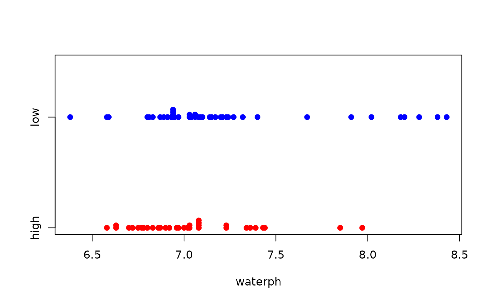

R/BSDA-package.R
Smokyph.RdData for Exercises 6.40, 6.59, 7.10, and 7.35
Smokyph
A data frame/tibble with 75 observations on three variables
water sample pH level
charater variable with values low (elevation below 0.6 miles),
and high (elevation above 0.6 miles)
elevation in miles
Schmoyer, R. L. (1994), Permutation Tests for Correlation in Regression Errors, Journal of the American Statistical Association, 89, 1507-1516.
Kitchens, L. J. (2003) Basic Statistics and Data Analysis. Pacific Grove, CA: Brooks/Cole, a division of Thomson Learning.
#> Min. 1st Qu. Median Mean 3rd Qu. Max. #> 6.380 6.880 7.030 7.140 7.235 8.430#> high low #> 7.039697 7.218095#> #> One Sample t-test #> #> data: Smokyph$waterph #> t = 2.7516, df = 74, p-value = 0.007452 #> alternative hypothesis: true mean is not equal to 7 #> 95 percent confidence interval: #> 7.038511 7.240689 #> sample estimates: #> mean of x #> 7.1396 #>#> #> One-sample Sign-Test #> #> data: Smokyph$waterph #> s = 42, p-value = 0.2954 #> alternative hypothesis: true median is not equal to 7 #> 95 percent confidence interval: #> 6.954832 7.085168 #> sample estimates: #> median of x #> 7.03 #> #> Achieved and Interpolated Confidence Intervals: #> #> Conf.Level L.E.pt U.E.pt #> Lower Achieved CI 0.9361 6.9600 7.0800 #> Interpolated CI 0.9500 6.9548 7.0852 #> Upper Achieved CI 0.9630 6.9500 7.0900 #>#> #> Welch Two Sample t-test #> #> data: waterph by code #> t = -1.859, df = 70.875, p-value = 0.03359 #> alternative hypothesis: true difference in means between group high and group low is less than 0 #> 95 percent confidence interval: #> -Inf -0.01845818 #> sample estimates: #> mean in group high mean in group low #> 7.039697 7.218095 #>#> #> Welch Two Sample t-test #> #> data: waterph by code #> t = -1.859, df = 70.875, p-value = 0.06718 #> alternative hypothesis: true difference in means between group high and group low is not equal to 0 #> 90 percent confidence interval: #> -0.33833836 -0.01845818 #> sample estimates: #> mean in group high mean in group low #> 7.039697 7.218095 #>if (FALSE) { library(ggplot2) ggplot2::ggplot(data = Smokyph, aes(x = waterph, fill = code)) + geom_dotplot() + facet_grid(code ~ .) + guides(fill = FALSE) }